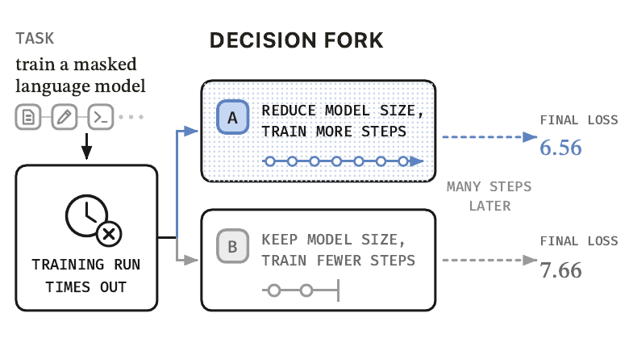
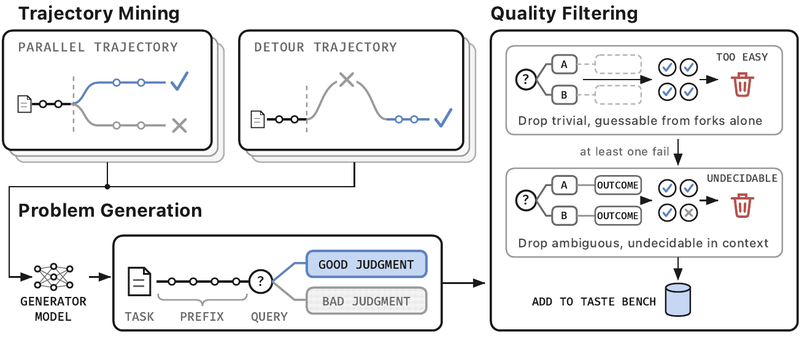
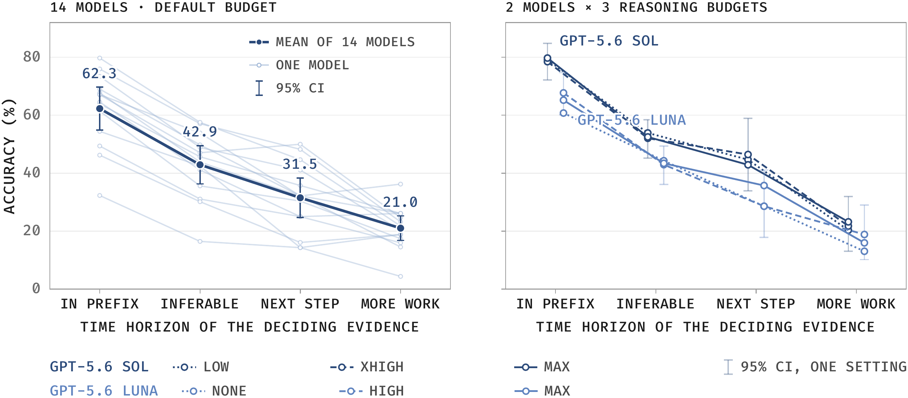
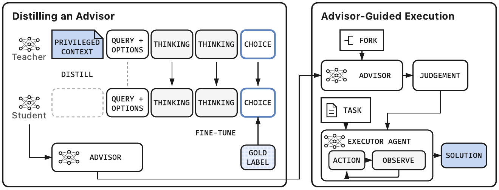
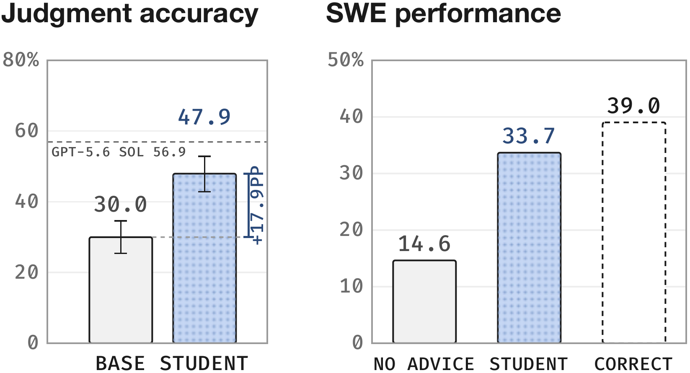

概念贡献
把“结果出现前选对方向”定义为长程判断，并从终局成功率中分离出来。即使未来不用“taste”这个名字，这个评测单位仍有价值。
The Tasteful Agent: Measuring and Improving Taste in Long-Horizon TasksWenbo Pan、Zhichao Liu、Shujie Liu、Jingying Zeng、Chin-Yew Lin、Xianfeng Tang、Yan Lu、Qi He、Xiaohua Jia · City University of Hong Kong / Microsoft · arXiv v2，2026-09-23
长程任务的终局成功率把至少三件事混在一起：方向判断、后续执行质量和环境随机性。论文把其中第一项单独抽出，称为 Agent 的“品味”——在结果尚不可见时，能否选择未来更可能带来好结果的方向。
软件 Agent 可能在两个实现方案之间选择，研究 Agent 可能决定继续某个假设还是转向。错误方向在当下往往并不荒谬，代价要经过测试、扩展实现或多轮实验才暴露。只看最终任务是否通过，会告诉我们“整条轨迹成败”，却不能判断中途哪次选择真正拖累了结果，也不能区分好判断被差执行浪费、坏判断被后续补救掩盖的情形。
论文的概念转移是：过去把整条任务轨迹当作评测单位，本文把“分叉时刻”当作评测单位。给模型原任务、分叉前轨迹和两个候选方向，但隐藏分叉后的工作；由真实后续结果决定哪个候选受到支持。这样，问题从“你能否完成整个任务”变成“在同样历史下，你会押注哪条未来”。
理解这篇论文，最重要的是把研究对象、指标和长期愿景分开。下表显示它与相邻评测的区别：不是简单增加更长任务，而是把延迟显现的决策质量变成一个可重复、可训练的二选一判断问题。
| 研究线 | 被评对象 | 标签从哪里来 | 本文的新增量 |
|---|---|---|---|
| 端到端 Agent Benchmark | 整条任务是否成功 | 测试、评分器或环境回报 | 不能分离中途判断与执行 |
| 方案 / 研究想法比较 | 脱离执行轨迹的两个提案 | 专家偏好或事后性能 | 本文保留了当时的任务状态与历史 |
| 过程监督 / Step Reward | 单步是否正确或有用 | 人工标签、rollout 回报 | 本文关注影响在较远未来才显现的方向判断 |
| Taste-Bench | 真实轨迹里的决策分叉 | 平行分支或绕路恢复的后续结果 | 隐藏未来后评测，并可把事后判断蒸馏回模型 |
来源：论文 Introduction、Measuring Taste via Long-Horizon Judgment 与 Related Work。比较轴是解释性归纳。

示例中，模型训练超时后需要在“缩小模型、训练更久”和“保留规模、减少步数”之间选择。评测模型只能看到分叉前信息，不能看到后续损失 6.56 与 7.66。
阅读要点：图说明了任务单位，但不自动证明后续差异完全由这次选择导致；后续执行仍可能改变结果，这正是 Benchmark 构造必须严筛的原因。
Taste-Bench 的基础设施贡献在于把非结构化长轨迹压缩成可验证问题：同一前缀、两个真实可行方向、一个由后续结果支持的标签。作者用平行轨迹和绕路轨迹覆盖两类错误，再用“可从措辞猜中”和“事后仍无法定论”两道过滤器控制标签质量。
平行轨迹构造把同一任务的多次独立尝试对齐：它们在相近历史处转向不同方案，随后一个成功、一个失败。分叉前等价部分成为前缀，两条实际行动被中性改写为候选。它能捕捉 Agent 从未意识到的坏方向，但仍面临后续执行差异这一混杂因素。
绕路轨迹构造则在单次运行中寻找“先走错—观察失败—换路—完成任务”的序列，把被放弃方向和恢复方向放到更早的分叉处比较。它拥有轨迹内部的纠错证据，但容易把只有看到失败后才知道的答案倒灌到候选描述，因此生成器必须引用承诺、失败、转向与成功的原始步骤，并检查前缀没有泄漏未来。
q 是任务，hₜ 是分叉前历史，c₁/c₂ 是候选方向，Eᵢ 是分支后续证据，U 把证据映射为结果。模型只接收 x；标签 y 由隐藏的后续证据产生。
构造流水线不是“让模型随便编两个选项”。它先从真实运行里找分叉，再依次排除两类无效题：只看候选措辞就能猜中的题不测长程判断；即使看完整记录也无法确定标签的题则缺乏可判定性。

生成器提出候选分叉，四个独立 Judge 先只看候选过滤“太容易”，再看完整轨迹过滤“不可判”。最终只保留同时通过两道门的项目。
阅读要点：这种严格筛选增强内部有效性，但也改变了题目分布：保留下来的不是自然分叉的无偏样本，而是特意挑出的“至少让一个 Judge 犯错、且所有 Judge 事后同意标签”的难例。
原始池包含 2,677 条 SWE-bench Pro 工程 rollout（517 个任务）和 1,132 条 AI 研发运行（47 个 RE-Bench / HCAST 任务）。生成器共挖出 4,657 个候选分叉，1,809 个通过生成规则，729 个通过“非平凡”过滤，最后 502 个进入发布集，保留率 10.8%。其中工程 390 题、研究 112 题；平行构造 172 题、绕路构造 330 题。
为减轻二选一位置偏差，每题按一个固定顺序和完全反转顺序各问一次，只有两次都选对才记为正确。因此论文主指标下随机猜测的期望是 25%，总偏好第一个或第二个位置的模型得 0%。这是一种严格的“一致判断”指标，并不等同于普通二选一单次准确率；论文同时报告两次展示的平均准确率以补充解释。
标签有效性由自动过滤与小规模人审共同支撑，但两者回答的是不同问题：自动过滤确保机器 Judge 在完整记录下意见一致，人审则检查结果公开后人类是否认可所标方向。
| 环节 | 规模 / 结果 | 支持的主张 | 仍未排除 |
|---|---|---|---|
| 候选 → 发布 | 4,657 → 502（10.8%） | 流水线有较强质量门槛 | 筛选选择偏差与 Judge 共识偏差 |
| 人类事后复核 | 170 / 172 明确判断支持标签（98.8%） | 对有明确偏好的复核，标签与人类高度一致 | 仅 100 个抽样题；先看到了后续结果 |
| 两位复核者一致性 | 73 / 74；κ = 0.973 | 结果公开后的方向判断稳定 | 不能证明分叉当时应具有同等可预测性 |
| 四象限覆盖 | 工程 / 研究 × 平行 / 绕路 | 不依赖单一构造和单一任务类型 | 仍集中于软件与 AI 研发 |
来源：论文 Section 3、Appendix A 与 Appendix E。人审 100 题包含 70 个发布题及 30 个被过滤题；172 是两位复核者保留的明确 A/B 判断总数。
14 个模型的结果支持 Taste-Bench 测到一种尚未饱和、又不完全等同于端到端编码能力的信号。最强结果为 59.7%，而当关键证据必须等到更多后续工作才出现时，模型平均准确率降到 21.0%，接近严格指标下的 25% 随机水平。
GPT-5.6 Sol 以 59.7% 的“两个顺序都答对”平均准确率居首，GPT-5.5 为 59.5%，Claude Opus 5 为 55.5%。结果并非只反映是否会写代码：Taste-Bench 与共享 Harness 下 SWE-bench Verified 得分的相关系数为 0.63，只解释约 39% 的模型间方差；在最接近的软件工程子集上相关更低，仅 0.37。样本只有 11 个可比模型且置信区间较宽，因此更稳妥的结论是“部分重叠”，而非已经识别出完全独立能力。
最有解释力的分解是“决定性证据离分叉有多远”。作者把分叉分为前缀内已有明确证据、可由前缀推断、下一步观察即可确定、需要更完整后续工作四档。14 模型均值依次为 62.3%、42.9%、31.5%、21.0%。这说明 Benchmark 的难点不是候选文本本身，而是需要模拟尚未展开的后续执行。

左图深色线是 14 模型均值；右图比较 GPT-5.6 Sol 与 Luna 的三档推理强度。Sol 从最低到最高预算变化 −0.2 个百分点，Luna 为 +2.2 个百分点，Bootstrap 区间均跨 0。
谨慎解读：“增加预算无效”只在这两个模型、固定提示、固定 Token 上限和推理强度设置中成立。它更像是在排除“没想够久”这一简单解释，不能推出所有形式的测试时搜索、执行探针或多样化 rollout 都无效。
把主结果放在同一张表里，可以看出不同数字支撑不同层次的论断：排名证明当前模型未饱和，时距分解支持“延迟证据”解释，预算消融只排除一种计算不足，相关分析则说明该指标不是端到端能力的简单复刻。
| 结果 | 数值 | 能支持什么 | 不能单独证明什么 |
|---|---|---|---|
| 最佳模型 | GPT-5.6 Sol：59.7% | Benchmark 对前沿模型仍有区分度 | 低分全部来自“品味”而非格式、上下文与领域知识 |
| 分叉类型 | 两域中 Detour 都比 Parallel 难 | 预见自己将来纠错的方向更难判断 | 两构造难度完全可比 |
| 时距 | 62.3 → 21.0% | 关键证据越晚出现，模型越难 | 时距是唯一因果因素 |
| 推理预算 | Sol −0.2pt；Luna +2.2pt | 同一接口下更多内部推理未显著提升 | 执行候选、外部工具搜索或多样化采样也无效 |
| 与 SWE-bench Verified | r = 0.63；工程子集 r = 0.37 | 测量与端到端能力只有部分重叠 | 已建立稳定的心理测量学独立构念 |
来源：论文 Section 4、Figure 3–5、Appendix D。论文报告平均相关的 95% 区间为 [+0.04,+0.89]，工程子集为 [−0.30,+0.79]。
每个分叉只有一个二元标签，直接监督很容易记答案。论文让同一个 Qwen3.6-27B 在两种上下文中扮演教师和学生：教师额外看到受支持候选的示范，学生只看到正常问题；再用教师的完整推理序列做前向 KL 蒸馏，并用任务不重叠的折验证迁移。
训练只使用 390 个工程问题，按源任务拆成两个互不重叠的 195 题折。教师上下文明确告诉模型这次分叉中哪条路成功、哪条失败，然后生成推理；学生上下文看不到这段示范。训练用 LoRA 更新约 79.7M 参数，对教师生成的推理 Token 和最终选择计算前向 KL，随后再用学生自己的自由推理轨迹校准答案位置。
这个设计把优化边界从“当前上下文里利用事后提示”移到“模型权重里内化跨任务判断模式”。但它仍依赖高质量事后标签，并且教师与学生是同一基础模型，实验更接近特权信息的上下文蒸馏，而非把一个更强模型的知识传给小模型。

学生不直接完成 SWE-bench Pro，而是在已挖出的分叉上选择方向；其判断被写成“已知陷阱 / 建议路线”注入执行器。这样可以把判断改进与执行能力尽量分离。
阅读要点：执行器接收的是同一具体任务先前运行中挖出的分叉笔记，因此这是“同任务多次尝试后的经验复用”，不是从零面对一个从未运行过的新任务。
在任务不重叠的工程分叉上，学生严格一致准确率从基础模型的 30.0% 升到 47.9%，增加 17.9 个百分点；两顺序平均准确率从 42.7% 升到 62.4%。训练折单顺序准确率则从 48.6% 跳到 92.9%，显示记忆空间确实很大，也说明任务隔离评测不可省略。
端到端实验选择 41 个留出 SWE-bench Pro 任务，共 98 个此前已挖出的分叉。固定 Qwen3.6-27B 执行器在无建议时成功率 14.6%，输入学生建议后为 33.7%；若每个分叉都给正确建议，上界为 39.0%。学生在 98 个分叉中选对 77 个，因此它兑现了正确建议上界的大部分。

左侧验证判断迁移到训练未见任务，右侧验证这些判断作为建议能帮助固定执行器。正确建议条件是一个有用上界，说明分叉质量与方向选择确实对这些任务结果具有实际杠杆。
谨慎解读：41 个任务来自能够挖出至少一个分叉的任务集合，且建议总结了这些任务的既往运行。结果证明经验复用与判断训练的组合有效，不等价于学生学会了无需历史轨迹即可泛化的通用品味。
把训练与部署放到完整生命周期里看，成本和适用条件更清楚：先要多次运行任务产生分叉，再做生成、过滤和蒸馏，最后才能在后续运行里复用建议。论文证明的是这种循环的效用，不是零成本、首轮任务上的普遍提升。
最可迁移的贡献，是把长程 Agent 的中途方向选择从不可见的“经验感”变成可收集、可评测、可优化的对象。最需要克制的地方，则是把已实现结果外推为通用“品味”：当前标签仍来自特定轨迹的事后成败，而不是对同一决策进行充分控制后的期望价值。
按知识层级看，论文的贡献并不等重。概念层决定未来研究如何提问；Benchmark 与过滤流水线让问题可操作；蒸馏和建议注入说明该信号可以转化为收益；具体数值则只在当前任务、模型和多次尝试工作流内成立。
把“结果出现前选对方向”定义为长程判断，并从终局成功率中分离出来。即使未来不用“taste”这个名字，这个评测单位仍有价值。
平行 / 绕路两种轨迹挖掘、非平凡与可判定过滤、双顺序评测，共同把事后轨迹转成 502 个可审计问题。
用特权结果上下文生成推理，再向无结果学生做 KL 蒸馏；部署时让学生提供方向建议、固定执行器负责执行。
前沿模型仍不稳定；证据时距越长越难；单纯增加推理强度未改善；训练后的判断能提升留出任务成功率。
证据性质：编辑性推断。两条分支除分叉判断外还包含不同后续执行与随机性；严格过滤提高可判定性，却不能完整建立因果反事实。
决定性检验：在同一分叉对每个候选做多次受控 continuation，估计结果分布而非单次赢家。
证据性质：论文设置直接可见。学生没在训练中见过 41 个任务，但输入给执行器的建议来自这些任务的先前轨迹。
决定性检验：只提供别的任务蒸馏出的通用判断策略，在完全没有本任务历史的首轮运行上测试。
证据性质：由筛选规则导出。至少一个 Judge 必须在无历史时答错，所有 Judge 又必须在完整记录下同意标签；502 题只占候选 10.8%。
决定性检验：在自然抽样分叉上分层报告可判定率、准确率与校准，而不是只评发布集。
证据性质：系统边界分析。多次 rollout、生成器、四 Judge、蒸馏 GPU 与任务特定笔记都发生在部署收益之前。
决定性检验：对齐总 Token、GPU、墙钟时间和尝试次数，与“直接多跑几次并选最好结果”等强反事实比较。
最强反事实：如果在相同总预算下，简单保存同任务失败模式、增加可执行探针，或让基础 Agent 多做候选 rollout 再选择，就能匹配学生建议的端到端收益，那么蒸馏“品味”的独立价值会变窄；反之，若蒸馏学生在完全新任务、无任务特定笔记时仍提高选择质量，论文的长期愿景会得到显著加强。
因此，这篇论文最重要的启发不是“给 Agent 一个玄学的品味分数”，而是把判断放在长期执行闭环里单独建模：提出方向、等待证据、回填信用、再训练未来选择。它把监督信号从即时正确性推进到延迟后果，也把瓶颈从“有没有长轨迹”移动到“能否从轨迹中识别近似因果、可迁移的决策分叉”。
一句话判断：Taste-Bench 是一个强而克制的研究起点：它已经证明事后轨迹可用于测量和训练中途判断，但尚未证明单次轨迹赢家等于一般意义上的最佳决策，也未证明这套判断能脱离同任务历史直接泛化。
主要来源：arXiv:2609.25804v2（2026-09-23），包括主文、附录构造统计、完整模型结果、时距与推理预算分析、人类复核、蒸馏配置和端到端任务明细。本文未独立复现实验；“最强反事实”、生命周期成本与因果边界为基于论文证据的编辑性判断。
← 返回论文目录